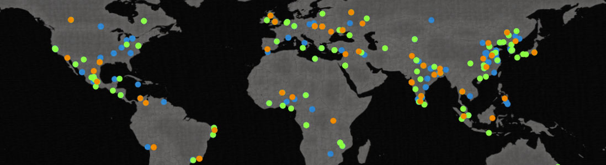

Jonathan Cutrell
Projects from Fall 2011, 6310, Computer as Expressive Medium
Project 1: Gravorbity
 Project One
Project One
For the first project, we were assigned to create a drawing tool. I decided to create a tool that has two main drawing functions (orb and brush); the brush strokes respond to the orbs that are currently placed on the canvas. Go To Project
Project 2: Tweet Comparison
Project TwoFor the second project, we were assigned to create a program that approaches navigable information in an interesting way. I created a tweet mapping agent that pulls the latest tweets about two search terms, and maps each tweet containing that search term as well as tweets that contain both terms. (note: All data is static, not live. The search terms entered do not appear in the map. Unfortunately, Twitter turns out to be less than ideal for location-based data gathering and presentation.) Go To Project
Project 3: Blockplay
Project ThreeFor the final project, we were assigned the task of creating a program that exhibits autonomous behavior. I decided to create a 3d block co-creation space. The computer creates with the user in dynamic ways. The computer starts out with an even bias to either create a block or destroy a block. The user can search Twitter for any keyword; the tweets are then parsed for words that denote creativity or destruction, and a ratio of creative to destructive words decides the bias of the computer's creative demeanor. Go To Project